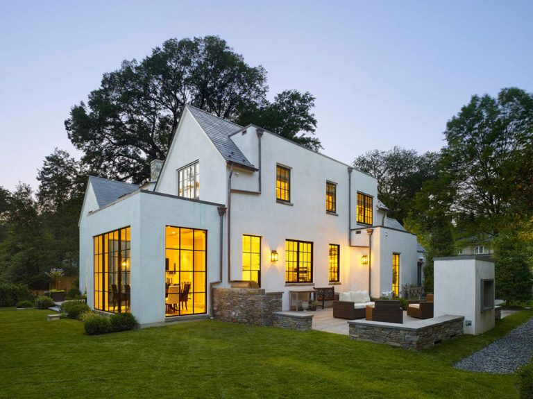
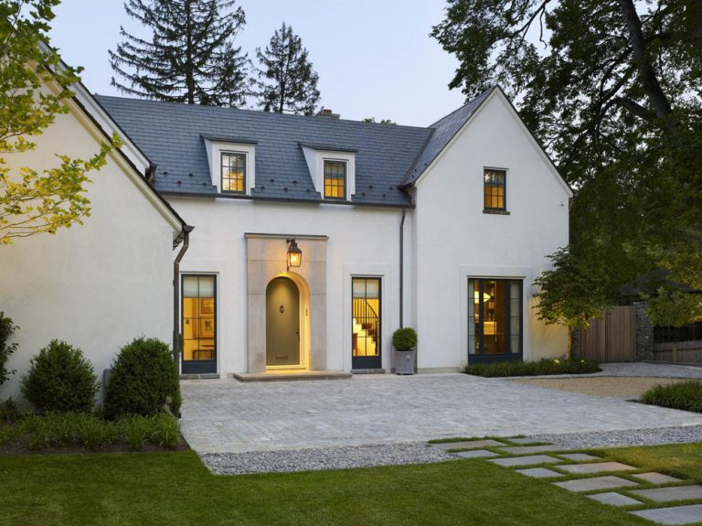
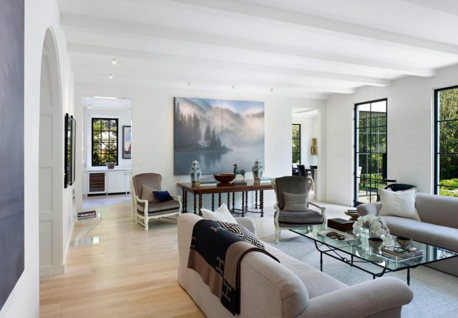
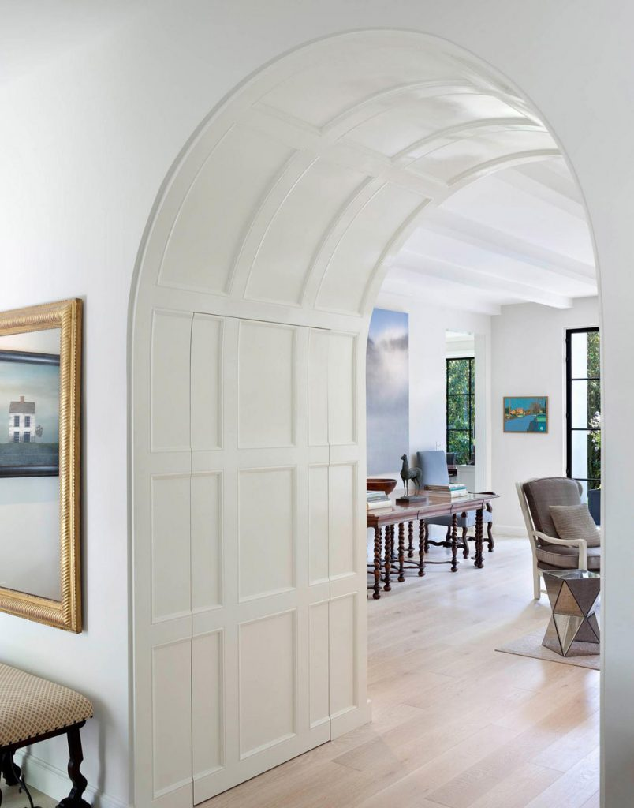
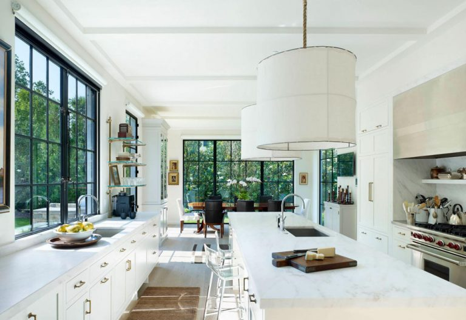
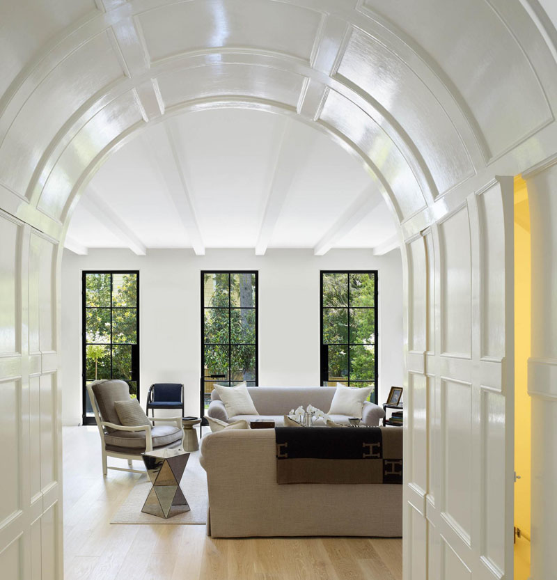

{% extends 'base.html'%}
{%block title%}Classic Contemporary{%endblock%}
{%block content%}
<div>
    <div>
        <section class="cprojects1" style="text-align: center; padding: 77px;">
            <h1 style="font-family:Work Sans,sans serif;font-size: 4em; margin-bottom: 94px;">Classic Contemporary Architecture</h1>
            <div class="cproject-container1" style="display: flex; justify-content: center; gap: 87px;">
                <div class="cproject-card1" style="width: 410px; border-radius: 3px; overflow: hidden; background-color: white; box-shadow: 0 4px 8px rgba(0, 0, 0, 0.1); ">
                
                  
                    
                </div>
                <div class="cproject-card1" style="width: 410px; border-radius: 3px; overflow: hidden; background-color: white; box-shadow: 0 4px 8px rgba(0, 0, 0, 0.1);">
                    
                </div>
                <div class="cproject-card1" style="width: 410px; border-radius: 3px; overflow: hidden; background-color: white; box-shadow: 0 4px 8px rgba(0, 0, 0, 0.1); ">
                    
                </div>
            </div>
        </section>
        <section class="cprojects2" style="text-align: center; padding: 77px;">
            <div class="cproject-container2" style="display: flex; justify-content: center; gap: 87px;">
                <div class="cproject-card2" style="width: 410px; border-radius: 3px; overflow: hidden; background-color: white; box-shadow: 0 4px 8px rgba(0, 0, 0, 0.1); ">
                
                  
                    
                </div>
                <div class="cproject-card2" style="width: 410px; border-radius: 3px; overflow: hidden; background-color: white; box-shadow: 0 4px 8px rgba(0, 0, 0, 0.1);">
                    
                </div>
                <div class="cproject-card2" style="width: 410px; border-radius: 3px; overflow: hidden; background-color: white; box-shadow: 0 4px 8px rgba(0, 0, 0, 0.1); ">
                    
                </div>
            </div>
        </section>

{%endblock%}